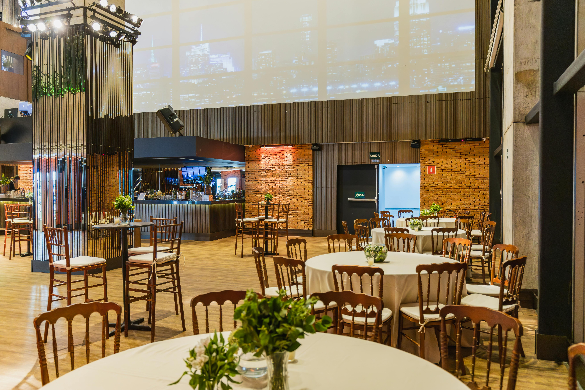
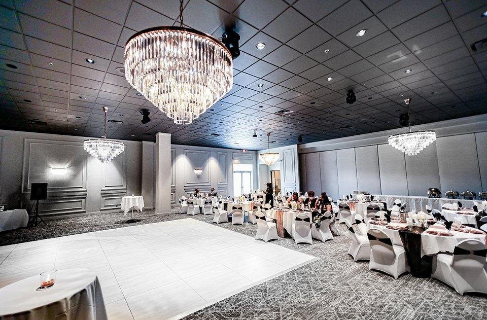

Long-table supper
A seasonal menu, a table set just for you, and no reason to rush off.
For all your favourite people
Intimate celebrations, long lunches, and good reasons to stay the whole weekend.
Mark a moment, gather the family, or bring your team somewhere different. We keep things personal, thoughtful, and easy to make your own.
From a long-table supper to a weekend celebration, we will help with the details.

01 / The garden table↗
02 / The house room↗Our team will help shape a gathering around your group and the kind of feeling you want to create.
A seasonal menu, a table set just for you, and no reason to rush off.
Open-air celebrations framed by leafy corners and coastal light.
Make a celebration of the stay with rooms for your favourite people.
Tell us the date, the occasion, and a little about your group. We will take it from there.
Plan a gathering